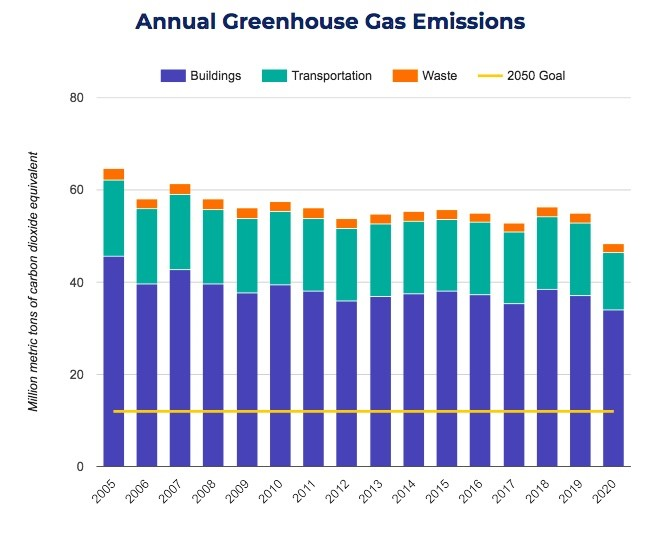
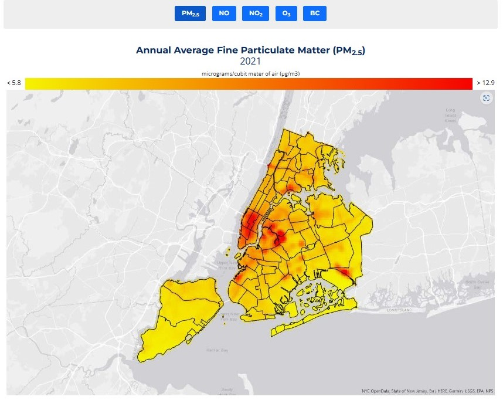
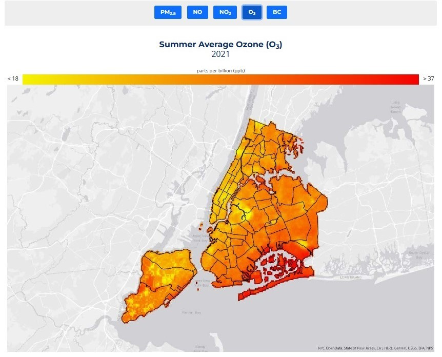

4 Week 4 - Policy applications
4.1 Summary
New York City faces significant air pollution challenges due to its dense population, extensive transportation network, and various industrial activities (Greenfield, 2023). The city’s air quality is impacted by emissions from vehicles, power plants, construction sites, and other sources.

The high population density and traffic congestion in New York City result in elevated levels of vehicle emissions, especially in areas with heavy traffic. Industrial activities and commercial buildings also release pollutants into the air. These factors combined with geographical features can lead to the accumulation of pollutants and worsen air quality (Danek, Weglinska and Zareba, 2022).


OneNYC 2050 (New York City’s climate team, n/d) is a comprehensive sustainability plan introduced by the City of New York to address various challenges faced by the city, including environmental issues like air pollution. The plan encompasses initiatives aimed at reducing greenhouse gas emissions, improving air quality, and enhancing overall sustainability in the city.
OneNYC 2050 addresses air pollution challenges in New York City through a range of policies and strategies designed to mitigate pollution sources, improve air quality monitoring, and promote public health. Including the following aspects:
Traffic Emissions Reduction: Implementing measures to reduce vehicle emissions, and implementing congestion pricing to decrease traffic-related pollution.
Industrial Emission Controls: Enforcing regulations and incentives to reduce emissions from industrial sources like factories and power plants to enhance air quality and protect public health.
Green Infrastructure Development: Encouraging the creation of green spaces, urban forests, and sustainable infrastructure to help absorb pollutants and improve overall air quality in the city.
Public Awareness Campaigns: Educating residents about the health risks associated with air pollution and encouraging behavior changes that contribute to cleaner air and healthier communities.
In addition, the United Nations Environment Program released the report “Actions on Air Quality: A Global Summary of Policies and Programs to Reduce Air Pollution” (Environment, Fri, 09/03/2021 - 10:01) with the purpose of preventing and reducing air pollution to improve global air quality. It builds on the United Nations Environment Program (UNEP) 2016 report Action on Air Quality (Environment, Sun, 01/31/2016 - 00:00), which focuses on a range of measures to significantly improve air quality. World Health Organization (WHO) guidelines (World Health Organization, n/d) also provide guidance and recommendations on air quality standards to protect public health. It aims to reduce exposure to harmful air pollutants and mitigate the health impacts of poor air quality on populations around the world.
4.2 Applications
Remote sensing data offers innovative solutions for monitoring and managing air pollution effectively.
Air Pollution Risk Assessment Conduct air pollution risk assessments using GIS and remotely sensed data, as demonstrated in Kirkuk City, Iraq (Jamal Jumaah et al., 2023). Utilize geo-statistic techniques to map Air Quality Index (AQI) and Particulate Matter (PM10 and PM2.5) concentrations. Analyze remotely sensed data of PM2.5 and compare it with field measurements to assess health impacts per air pollutant. Generate spatial distribution maps to identify areas with hazardous air quality levels and provide insights for targeted interventions to mitigate pollution-related health risks.
Earth observation technology Earth observation (EO), including remote sensing, provides novel methods for estimating the annual mean levels of fine particulate matter (PM2.5) in cities. The H2020 SMURBS/ERA-PLANET project demonstrates the use of Copernicus Atmospheric Monitoring Service reanalysis data for PM2.5 values, offering a more granular and harmonized global approach to air quality monitoring (Bailey et al., 2023). This enables better comparability and scalability in monitoring efforts, which is essential for effective policy implementation and air pollution management.
Monitoring and Management Platform Development Develop a near real-time air pollution monitoring platform. The development of platforms like “Life Dee” in Thailand for near real-time monitoring of PM2.5 concentrations showcases the potential of combining remote sensing data, ground-based stations, and microclimate modeling (Sukawattanavijit et al., 2023). Such platforms provide a user-friendly interface for the public to monitor air quality and receive information on protective measures. They also offer valuable insights for government agencies to take proactive steps in mitigating air pollution and improving public health.
4.3 Reflections
Policies play a crucial role in shaping the development and functioning of cities. Proper policies can move urban areas toward more sustainable development. The use of data in policy-making can lead to more informed decisions. By analyzing data related to various aspects of city life, policymakers can identify trends, assess the effectiveness of policies, and make evidence-based choices.In addition, attention needs to be paid to data privacy issues and digital divide issues as well as ensuring equitable access to benefits when applying data to address policy challenges.
Addressing complex urban issues requires an interdisciplinary approach that integrates knowledge from various fields such as urban planning, data science, public policy, and social sciences. Collaboration across disciplines can lead to more holistic solutions. Involving residents in decision-making processes is essential for effective policy implementation in cities. Engaging with communities through data-driven approaches can help in understanding their needs and preferences better. Given the dynamic nature of cities and policies, it is important to continuously learn from experiences, adapt strategies based on feedback and data insights, and iterate on solutions to address evolving challenges.